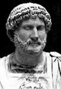

Hadrian (76-138) Antik Roma tarihindeki en başarılı imparatorlardan biridir. Yirmi bir yıllık iktidarı döneminde büyük askeri başarılar kazandı ve Roma İmparatorluğu’nun sınırları alabildiğine genişledi. Onun dönemi göreli bir barış ve refah dönemiydi. Hadrian sanatçılara büyük bir destek verdi. Mimari tarihte bugün için dahi bir dönüm noktası olarak görülen Roma Pantheonu’nun inşasında önemli katkıları oldu.

O zamanlar bir Roma eyaleti olan İspanya’da doğan Hadrian bir senatörün oğluydu. Babası 85 yılında, Hadrian 10 yaşındayken öldü. Hadrian geleceğin imparatoru Trajan (53-117) tarafından yetiştirildi. Çeşitli imparatorluk görevlerinde bulundu. Almanya, Suriye ve günümüz Romanyası’nda bulunan Dacia’da savaşlara katıldı. Trajan tarafından varis ilan edildi.
Hadrian eyaletlerdeki savaşları sırasında imparatorluğun zayıflığını kendi gözleriyle görme şansı elde etti. İmparator olur olmaz savunulamaz olarak gördüğü bölgelerden çekilmeye ve kalan yerlerin savunmasını güçlendirmeye karar verdi. Bu amaçla şehir duvarları güçlendirildi. Taştan yapılmış bir savunma duvarı olan Hadrian Duvarı, Kuzey İngiltere boyunca uzanmaktadır. Günümüzde dahi büyük ölçüde sağlam durumdadır. Bu duvar onun en önemli projeleri arasında kabul edilmektedir.
Roma’da ise daha önce yangından hasar gören eski bir tapınağın yerine Roma tanrılarına adanmış büyük ve kubbeli bir tapınak olan Pantheon’un yeniden inşasına katkı sağladı. Bu bina pek çok başka mimari eserin yanı sıra Washington’daki Jefforson Anıtı’na da mimari açıdan ilham vermiştir. Hadrian aynı zamanda imparatorluk sınırlarında yaşayan Romalı olmayan halklarla ilgilenmiş ve onlara hoşgörü göstermiştir. Yunan kültürünün büyük bir taraftarıdır.
Hadrian’ın dönemi büyük ölçüde barış içinde geçti. Diğer taraftan 135 yılında Yahudi isyanını bastıran büyük bir tiran olarak da anımsanmaktadır. İsyanın bastırılması için yüz binlerce yahudi öldürülmüştür. Tarihçi Edward Gibbon (1737-1794) onun dönemini karakterize eden şiddet ve refah dengesini şöyle anlatır: “Roma ordularının dehşeti imparatorların ılımlılığına ağırlık ve asalet eklemiştir.”
Hadrian 138 yılında öldü ve yerine evlatlık oğlu Antoninus Pius (86-161) geçti.
Ek Bilgiler
1- Hadrian Duvarı günümüz İngiltere-İskoçya sınırından birkaç km uzaklıktadır.
2- Hadrian imparatorluğun en ünlü zirveleri olan Sicilya’daki Etna Dağı ve Suriye’deki Jabal Agra Dağı’na tırmanmış olan bir dağcıydı.
3- İmparator çocukken ebeveynleri kendisine Yunan edebiyatına düşkünlüğünden ötürü Graeculus (Küçük Yunanlı) lakabını takmışlardır.